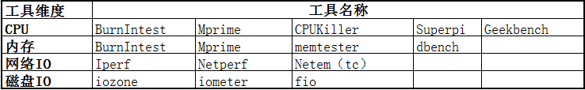

服务端稳定性测试的理论篇
Contents
当前我司业务发展蒸蒸日上，业务需求像洪水一样袭来。系统服务的稳定性重要作用不言而喻。本文主要就服务端的稳定性测试工作浅谈一下。
稳定性测试背景及目标
稳定性测试主要测试系统的长时间稳定运行能力，通过对用户实际使用场景的负载及应用场景分析，模拟真实的用户使用场景，并进行长时间的稳定运行，以保证产品在长时间运行方面可能存在的潜在问题的及时发现和有效解决。
##稳定性测试引入必要性分析
首先，部分问题，如内存泄露、句柄泄露、死锁等，在常规功能测试中难以发现，需要通过压力的注入以及系统的运行达到一定的时间后，才能触发问题的产生，所以引入稳定性测试，可以有利于该类问题的及时发现和提前解决；同时，在系统正常上线之前，通过对真实环境的长时间模拟测试，也可以有效的验证系统在正式上线以后的稳定运行能力，为产品上线后的稳定性和鲁棒性提供一定的数据参考。
稳定性测试执行策略及方法
具体执行策略
- 测试时间：最好保证系统持续稳定性运行724小时，最小稳定运行时间为324小时。
- 测试场景：参考业务的实际使用场景构建压力模型，模拟实际的场景运行（实际负载和并发量等），并且在测试中模拟实际日常的用户操作，操作中需要考虑并发因素，包括单操作并发和不同操作并发两种场景。
- 测试负载选择策略：一般和线上的实际场景保持一致，如果没有线上数据的时候，采取梯度加压的方法来进行变化。
- 稳定性测试是概率性的测试，就是说即使稳定性测试通过，也不能保证系统实际运行的时候不出问题。所以要尽可能的提高测试的可靠性。可以通过多次测试，延长测试时间，增大测试压力来提高测试的可靠性。
- 稳定性测试的测试时间和压力存在一定的关系。在测试时间不能保证的情况下，可以通过增强压力以及增大测试对象数量来达到快速验证的目的，但是建议最小测试时间不要小于3*24小时。
稳定性测试用例设计考虑维度
- 时间
- 大流量
- 并发
- 使用环境
- 使用方法
- 极端情况
时间，产品能持续长时间工作吗？可能会导致的问题：内存泄漏，队列堆积，存储等慢速设备持续跟不上，Cache，Buffer累积性问题，内存溢出等。
大流量，产品能处理这么大流量吗？可能导致的问题：系统崩溃，性能严重下降，资源耗尽，DB或磁盘空间满，触发系统的一些行为（流量控制等），依赖系统的一些异常等。
并发，在一定并发量的情况下系统有无异常？可能导致的问题与上面两种类似。并发包括平均并发量；峰值并发量；均值为主，特定时间加入峰值；加压，使系统资源达到特定值，维持压力，持续运行等情形。
使用环境：不同平台，网络，基础架构等。一般来说此为客户端稳定性测试需要考虑的验证点。
使用方法：客户对相关应用的使用方式。具体到服务端来说，有被依赖方调用底层接口使用姿势等问题。
极端情况：极端情况下，应用可以crash，但是不能丢数据等情形的验证。
测试关注点
- 观察系统在有负载的情况下业务运行是否正常，是否存在内存泄露、句柄泄露、数据一致性等问题导致系统出现崩溃、异常重启。
- 是否存在系统长时间运行下，系统性能下降明显，响应时间快速增长，可用内存是否在减少，CPU利用率是否在上升等等都可以说明系统是否存在问题。
- 其他项：包括CPU，MEM，disk i/o，网络，应用的日志，数据库状态，请求准确率，响应时间，吞吐量等。
常用测试工具介绍
压力工具方面，根据压力维度的不同主要分为CPU、内存、网络IO以及磁盘IO的压力工具，各种维度中的常用工具请参考如下内容。

典型服务端稳定性bug举例与分析
Bug：系统在长时间连续运行3天以后，虚拟机出现异常重启现象。 分析：典型稳定性测试问题，该类问题一般需要在长时间的连续运行情况下才会触发，该问题主要由于系统中存在内存泄露现象导致，在连续运行3天以后，泄露达到了问题的触发点，导致虚拟机异常重启，一般该类问题的出现时间还与系统的负载有一定的关系，在系统负载很高的情况下，问题的触发几率会增大，同时发生的时间间隔也可能出现一定的缩短。
Author smasterfree
LastMod 2017-07-24